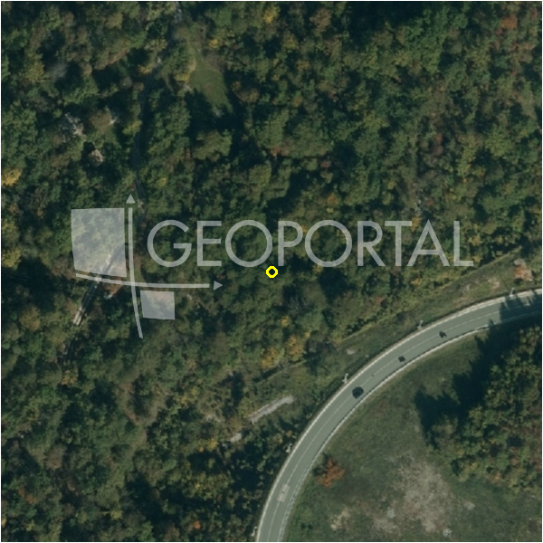

#38787 · Opatija, Mučići, građevinsko, 3100 m2, 10 min. od mora
Mučići, Matulji, Primorsko-goranska · zemljiste · njuskalo · status active · oglas ↗
Ocjena
- Score
- 55 rule 55 · LLM – · 13.09.2026.
- RLV
- 415.000 € (134 €/m²) · ratio 2,13
- Ukupna investicija
- 5,92 M€
- GBP
- 2.232 m²
- Feedback
- –
- CRM
- –
Sažetak: Prodaje se građevinsko zemljište od 3.100 m² u Mučićima (Matulji/Opatija), oko 10 km od mora, s blagim nagibom, asfaltiranim pristupom i infrastrukturom do terena. Postoji mogućnost dokupa susjedne parcele do ukupno 3.643 m² uz parcelaciju na četiri građevinska zemljišta, no to nije dio ove prodaje.
Oglas
- Cijena
- 195.000 € (63 €/m²)
- Površina
- 3.100 m²
- Prodavatelj
- agencija · DUX Nekretnine
- Prvi put
- 11.09.2026. · zadnje 11.09.2026. · 2 d na tržištu
Povijest cijene
| Datum | Cijena |
|---|---|
| 11.09.2026. | 195.000 € |
Flagovi
sea_row_nepoznat obala: red uz more nepoznat (bez GIS-a / približan pin) — pretpostavljen 2. red (−10)zone_uncertainty zona nije pregledana (reviewed: false) (−5)
zona_provjeriti zona iz geokodiranja — provjeriti (−5)
parcelacija fazni projekt / parcelacija
zona_iz_oglasa zona preuzeta iz teksta oglasa (bez GIS-a)
llm_pending LLM ekstrakcija/ocjena nedostupna
Komponente score-a
| rlv | {'gbp': 2232.0, 'kis': 0.8, 'nkp': 1674.0, 'noi': None, 'rlv': 414739.5652173916, 'ratio': 2.1268695652173926, 'value': None, 'phases': 2, 'profile': 'obala_visestambeno', 'gdv_neto': 7365600.0, 'cost_soft': 446400.0, 'gdv_bruto': 9207000.0, 'kis_known': False, 'total_inv': 5920620.0, 'cost_build': 4464000.0, 'cost_other': 803520.0, 'cost_sales': 276210.0, 'demolition': False, 'gbp_source': 'kis', 'rlv_per_m2': 133.78695652173923, 'parcel_area': 3100.0, 'parcelation': True, 'roi_on_cost': 0.19740669051552034, 'profit_at_ask': 1168770.0, 'cost_demolition': 0.0, 'total_inv_phase': 3063660.0, 'parcel_area_effective': 2790.0, 'sale_price_per_m2_nkp': 5500.0} |
| hard | [] |
| info | ['parcelacija', 'zona_iz_oglasa', 'llm_pending'] |
| rubric | {'permits': {'max': 5.0, 'detail': {'permit': 'none'}, 'points': 0.0}, 'location': {'max': 15.0, 'detail': {'source': 'rlv.yaml:pgz_opatija/row2', 'sale_price_per_m2_nkp': 5500.0}, 'points': 11.5}, 'physical': {'max': 4.0, 'detail': {'slope_pct': 9.76, 'slope_points': 2.0}, 'points': 2.0}, 'liquidity': {'max': 3.0, 'detail': {'n_cuts': 0, 'points_cut': 0.0, 'points_days': 0.016666666666666666, 'seller_type': 'agencija', 'points_fresh': 0.5, 'price_cut_pct': None, 'days_on_market': 2, 'points_private': 0}, 'points': 0.52}, 'rlv_ratio': {'max': 25.0, 'detail': {'rlv': 414740, 'ratio': 2.127, 'asking_price': 195000.0}, 'points': 25.0}, 'ticket_fit': {'max': 10.0, 'detail': {'asking_price': 195000.0}, 'points': 5.2}, 'zone_quality': {'max': 8.0, 'detail': {'source': 'oglas', 'zone_ok': True, 'zone_class': 'poslovno'}, 'points': 1.0}, 'profit_potential': {'max': 20.0, 'detail': {'roi_on_cost': 0.197, 'profit_at_ask': 1168770}, 'points': 20.0}, 'price_vs_benchmark': {'max': 10.0, 'detail': {'source': 'auto:Matulji', 'deviation': 0.531, 'ask_eur_m2': 63, 'benchmark_eur_m2': 134.17}, 'points': 10.0}} |
| weights | {'llm': 0.4, 'rule': 0.6, 'model': 0.0} |
| penalties | {'zona_provjeriti': 5, 'sea_row_nepoznat': 10, 'zone_uncertainty': 5} |
| raw_score | 75,2 |
| rlv_notes | ['parcelacija: > 2500 m² → fazni projekt, −10 % površine, +5 % soft', 'sea_row nepoznat → pretpostavljen 2. red', 'fazni projekt: 2 faze; investicija prve faze 3,063,660 €'] |
| flag_notes | {'phases': 2, 'max_gbp': 2232, 'total_inv': 5920620, 'zone_code': 'građevinsko', 'zone_note': 'provjeriti (geokodirano, zona = dominantna u 150 m)', 'zone_class': 'poslovno', 'zone_source': 'oglas', 'geo_precision': 'approx', 'sea_row_claim': 'none', 'zone_reviewed': None, 'total_inv_phase': 3063660} |
| caps_applied | [] |
GIS
- Čestica
- –
- Zona
- građevinsko (–) · provjeriti (geokodirano, zona = dominantna u 150 m)
- kig / kis / katnost
- – / – / –
- GP / UPU
- – · UPU –
- Pristup / nagib
- unknown · 9,8 % (max 15,7 %)
- More
- –
- Zaštite
- Natura ne · zaštićeno ne · kulturno dobro ne
- Zgrade na čestici
- –
- Match
- –
Karta
Ortofoto (DOF)

RLV kalkulacija — pretpostavke
| gbp | {'value': 2232.0, 'source': 'kis'} |
| kis | {'value': 0.8, 'source': 'default_profila'} |
| sea_row | {'value': '2', 'source': 'pretpostavka'} |
| soft_pct | {'value': 0.1, 'source': 'profil+parcelacija'} |
| nkp_ratio | {'value': 0.75, 'source': 'profil'} |
| cost_other | {'value': 803520.0, 'source': 'profil: doprinosi+uređenje po m² GBP, financiranje+rezerva % gradnje'} |
| parcel_area | {'value': 3100.0, 'source': 'oglas'} |
| asking_price | {'value': 195000.0, 'source': 'oglas'} |
| margin_on_cost | {'value': 0.15, 'source': 'profil'} |
| build_cost_per_m2_gbp | {'value': 2000.0, 'source': 'profil'} |
| sale_price_per_m2_nkp | {'value': 5500.0, 'source': 'rlv.yaml:pgz_opatija/row2'} |
| transfer_tax_and_acquisition | {'value': 0.06, 'source': 'profil'} |
Ekstrakcija iz oglasa
| permit | none |
| zone_claim | građevinsko |
| access_road | yes |
| parcel_count | 1 |
| sea_row_claim | none |
| slope_mention | blagim nagibom |
| building_on_parcel | none |
| sea_distance_m_claim | 10000.0 |
Benchmarks mikrolokacije
| Vrsta | Vrijednost | n | Od | Izvor |
|---|---|---|---|---|
| land_ask_eur_m2 | 134 | 254 | 11.09.2026. | auto |
Opis oglasa
U prilici smo ponuditi Vam građevinsko zemljište površine 3.100 m², idealno za izgradnju obiteljske kuće, vile ili više stambenih objekata. Zemljište se nalazi na brežuljku s blagim nagibom, na mirnoj lokaciji, neposredno uz asfaltiranu cestu, na rubu manjeg stambenog naselja. Autocesta je udaljena svega nekoliko minuta vožnje. Sve komunalne usluge dostupne su do samog terena. Vlasništvo je čisto i uredno. Nekretnina je udaljena oko 10 kilometara od mora i plaža, odnosno približno 10 minuta vožnje automobilom. Do graničnog prijelaza Rupa potrebno je svega 12 minuta lagane vožnje. Javni prijevoz nalazi se u blizini. Ovo je odlična prilika za investitore koji se bave izgradnjom stambenih objekata, ali i za one koji žele izgraditi kuću za odmor s bazenom, obiteljsku kuću ili vilu u mirnom i tihom okruženju. POSTOJI MOGUĆNOST OTKUPA I SUSJEDNE PARCELE, čime se dobiva zemljište pravilnog pravokutnog oblika ukupne površine 3.643 m², uz mogućnost parcelacije na četiri građevinska zemljišta! NEKRETNINA PO ODLIČNOJ CIJENI! Poštovani potencijalni kupci, drago nam je što pokazujete interes za nekretnine iz naše ponude. Za više informacija i dogovor u vezi s razgledom nekretnine slobodno nas kontaktirajte - moguća je konzultacija na njemačkom jeziku. Poštovani klijenti, pružanje naših usluga regulirano je Općim uvjetima poslovanja, koji su, kao i Cjenik posredničkih usluga, dostupni na sljedećim poveznicama: www.dux-nekretnine.hr/opci-uvjeti-poslovanja www.dux-nekretnine.hr/o-nama/cjenik-posrednickih-usluga ID KOD AGENCIJE: 48766 Patrik Hrštić Agent s licencom Mob: +385 91 270 3979 Tel: +385 91 480 8808 E-mail: patrik@dux-nekretnine.hr www.dux-opatija.com Denis Kaštelan Agent s licencom Mob: +385 91 950 4277 Tel: +385 91 480 8808 E-mail: denis@dux-nekretnine.hr www.dux-opatija.com